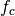
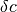
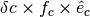
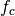
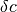
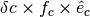

CartesianRepresentation¶
-
class
astropy.coordinates.CartesianRepresentation(x, y=None, z=None, unit=None, xyz_axis=None, differentials=None, copy=True)[source] [edit on github]¶ Bases:
astropy.coordinates.BaseRepresentationRepresentation of points in 3D cartesian coordinates.
Parameters: x, y, z :
Quantityor arrayThe x, y, and z coordinates of the point(s). If
x,y, andzhave different shapes, they should be broadcastable. If not quantity,unitshould be set. If onlyxis given, it is assumed that it contains an array with the 3 coordinates stored alongxyz_axis.unit :
Unitor strIf given, the coordinates will be converted to this unit (or taken to be in this unit if not given.
xyz_axis : int, optional
The axis along which the coordinates are stored when a single array is provided rather than distinct
x,y, andz(default: 0).differentials : dict,
CartesianDifferential, optionalAny differential classes that should be associated with this representation. The input must either be a single
CartesianDifferentialinstance, or a dictionary ofCartesianDifferentials with keys set to a string representation of the SI unit with which the differential (derivative) is taken. For example, for a velocity differential on a positional representation, the key would be's'for seconds, indicating that the derivative is a time derivative.copy : bool, optional
If
True(default), arrays will be copied rather than referenced.Attributes Summary
attr_classesxThe ‘x’ component of the points(s). xyzReturn a vector array of the x, y, and z coordinates. yThe ‘y’ component of the points(s). zThe ‘z’ component of the points(s). Methods Summary
cross(other)Cross product of two representations. dot(other)Dot product of two representations. from_cartesian(other)get_xyz([xyz_axis])Return a vector array of the x, y, and z coordinates. mean(*args, **kwargs)Vector mean. scale_factors()Scale factors for each component’s direction. sum(*args, **kwargs)Vector sum. to_cartesian()Convert the representation to its Cartesian form. transform(matrix)Transform the cartesian coordinates using a 3x3 matrix. unit_vectors()Cartesian unit vectors in the direction of each component. Attributes Documentation
-
attr_classes= OrderedDict([('x', <class 'astropy.units.quantity.Quantity'>), ('y', <class 'astropy.units.quantity.Quantity'>), ('z', <class 'astropy.units.quantity.Quantity'>)])¶
-
x¶ The ‘x’ component of the points(s).
-
xyz¶ Return a vector array of the x, y, and z coordinates.
Parameters: xyz_axis : int, optional
The axis in the final array along which the x, y, z components should be stored (default: 0).
Returns: xyz :
QuantityWith dimension 3 along
xyz_axis.
-
y¶ The ‘y’ component of the points(s).
-
z¶ The ‘z’ component of the points(s).
Methods Documentation
-
cross(other)[source] [edit on github]¶ Cross product of two representations.
Parameters: other : representation
If not already cartesian, it is converted.
Returns: cross_product :
CartesianRepresentationWith vectors perpendicular to both
selfandother.
-
dot(other)[source] [edit on github]¶ Dot product of two representations.
Note that any associated differentials will be dropped during this operation.
Parameters: other : representation
If not already cartesian, it is converted.
Returns: dot_product :
QuantityThe sum of the product of the x, y, and z components of
selfandother.
-
classmethod
from_cartesian(other)[source] [edit on github]¶
-
get_xyz(xyz_axis=0)[source] [edit on github]¶ Return a vector array of the x, y, and z coordinates.
Parameters: xyz_axis : int, optional
The axis in the final array along which the x, y, z components should be stored (default: 0).
Returns: xyz :
QuantityWith dimension 3 along
xyz_axis.
-
mean(*args, **kwargs)[source] [edit on github]¶ Vector mean.
Returns a new CartesianRepresentation instance with the means of the x, y, and z components.
Refer to
meanfor full documentation of the arguments, noting thataxisis the entry in theshapeof the representation, and that theoutargument cannot be used.
-
scale_factors()[source] [edit on github]¶ Scale factors for each component’s direction.
Given unit vectors
 and scale factors ,
a change in one component of  corresponds to a change
in representation of .
and scale factors ,
a change in one component of  corresponds to a change
in representation of .Returns: scale_factors : dict of
QuantityThe keys are the component names.
-
sum(*args, **kwargs)[source] [edit on github]¶ Vector sum.
Returns a new CartesianRepresentation instance with the sums of the x, y, and z components.
Refer to
sumfor full documentation of the arguments, noting thataxisis the entry in theshapeof the representation, and that theoutargument cannot be used.
-
to_cartesian()[source] [edit on github]¶ Convert the representation to its Cartesian form.
Note that any differentials get dropped.
Returns: cartrepr :
CartesianRepresentationThe representation in Cartesian form.
-
transform(matrix)[source] [edit on github]¶ Transform the cartesian coordinates using a 3x3 matrix.
This returns a new representation and does not modify the original one. Any differentials attached to this representation will also be transformed.
Parameters: matrix :
ndarrayA 3x3 transformation matrix, such as a rotation matrix.
Examples
We can start off by creating a cartesian representation object:
>>> from astropy import units as u >>> from astropy.coordinates import CartesianRepresentation >>> rep = CartesianRepresentation([1, 2] * u.pc, ... [2, 3] * u.pc, ... [3, 4] * u.pc)
We now create a rotation matrix around the z axis:
>>> from astropy.coordinates.matrix_utilities import rotation_matrix >>> rotation = rotation_matrix(30 * u.deg, axis='z')
Finally, we can apply this transformation:
>>> rep_new = rep.transform(rotation) >>> rep_new.xyz <Quantity [[ 1.8660254 , 3.23205081], [ 1.23205081, 1.59807621], [ 3. , 4. ]] pc>
-
unit_vectors()[source] [edit on github]¶ Cartesian unit vectors in the direction of each component.
Given unit vectors
and scale factors ,
a change in one component of corresponds to a change
in representation of .Returns: unit_vectors : dict of
CartesianRepresentationThe keys are the component names.
-